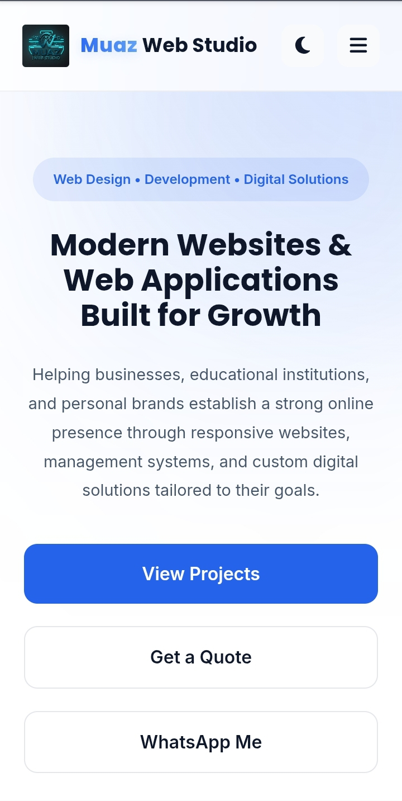
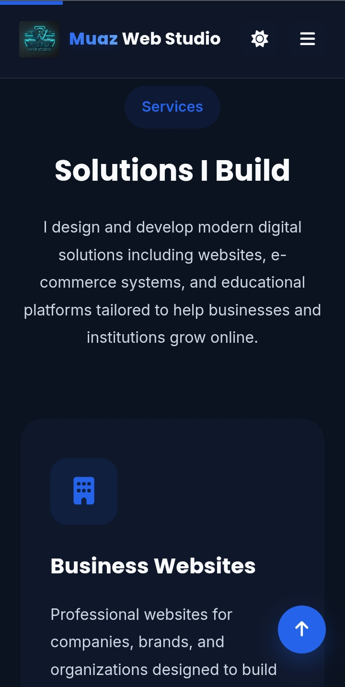

Project Gallery



Case Study
A modern agency portfolio website designed to showcase services, projects, pricing systems, and case studies with a clean SaaS-inspired UI.
Website Sections
Mobile Optimized
Theme System
Reusable Components
Muaz Web Studio was built as a professional portfolio platform to present web development services, showcase projects, and attract clients through a modern and minimal design approach.
The goal was to create a scalable agency website that reflects real-world SaaS and tech studio standards.
Reusable components for scalability across pages.
Fully dynamic theme switching experience.
Optimized for mobile, tablet, and desktop.
Lightweight structure with smooth interactions.


The website successfully established a professional digital presence for Muaz Web Studio, enabling structured service presentation and client engagement.
It now serves as the foundation for all future projects, landing pages, and case studies.
I design and build modern web systems for businesses, institutes, and startups.
Contact Me